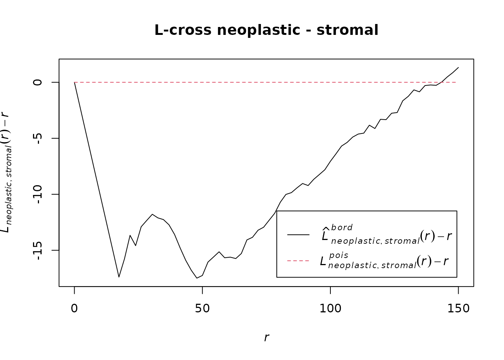

This pipeline reads the cells of a slide and its tissue mask, builds a point pattern, reduces the number of cells and estimates the L-cross function between two cell types (here neoplastic and stromal cells).
The code runs on the example data shipped with the package. The
chunks that work on the full TCGA data on the HPC are shown but not run
(eval: false).
Reading a slide
ann2ppp() reads the h5ad file and uses the PNG mask as
window. The masks are thumbnails at 1.25x and the coordinates are at
40x, so each mask pixel is 40 / 1.25 = 32 coordinate units.
On the HPC, for one slide:
sample_dir <- "/projects/shared/TCGA_data/h5ad/TCGA-TS-A7P8-01Z-00-DX1.25E9AFA9-6C12-4F18-BE79-2F4F19887ECD.h5ad.gz"
save_dir <- "/projects/shared/TCGA_data/results/test"
file_name <- sub("\\.h5ad\\.gz$", ".rds", basename(sample_dir))
save_path <- file.path(save_dir, file_name)
mask_path <- sub("/h5ad/", "/mask/", sample_dir)
mask_path <- sub("\\.h5ad\\.gz$", ".png", mask_path)
pp_object <- ann2ppp(sample_dir, mask = mask_path, magnif = 40,
thumb_mag = 1.25, marks_col = "type")The same call on the small example file shipped with the package (it holds only a small square of a slide, while the mask covers the whole slide):
f <- system.file("extdata", "tcga_tiny.h5ad", package = "SpaFun")
mask <- system.file("extdata", "tcga_tiny_mask.png", package = "SpaFun")
if (requireNamespace("anndataR", quietly = TRUE)) {
pp_tiny <- ann2ppp(f, mask = mask, magnif = 40, marks_col = "type")
print(pp_tiny)
print(table(marks(pp_tiny)))
}
#> Marked planar point pattern: 1527 points
#> Multitype, with levels =
#> benign epithelial inflammatory necrotic neoplastic no label stromal
#> window: binary image mask
#> 2736 x 2896 pixel array (ny, nx)
#> enclosing rectangle: [0, 92672] x [0, 87552] units
#>
#> benign epithelial inflammatory necrotic neoplastic
#> 33 29 8 1313
#> no label stromal
#> 31 113For the next steps we use a larger example: a crop of a slide with
all its cells, from tcga_crops.
Downsampling
Whole slides have up to millions of cells. We keep only neoplastic and stromal cells and reduce each type separately with uniform thinning, which leaves the L-cross function unchanged (see the “Downsampling” vignette).
On the HPC:
set.seed(10)
ppp_sub <- downsample(pp_object, method = "uniform", n_target = 40000,
marks = c("neoplastic", "stromal"), by_marks = TRUE)On the example crop, with a smaller target:
set.seed(10)
ppp_sub <- downsample(pp_object, method = "uniform", n_target = 5000,
marks = c("neoplastic", "stromal"), by_marks = TRUE)
attr(ppp_sub, "downsample")$n_kept_by_mark
#>
#> neoplastic stromal
#> 5000 1934L-cross function
r_values <- seq(0, 150, length.out = 70)
Lcross_neoStroma <- Lcross(
ppp_sub,
i = "neoplastic",
j = "stromal",
r = r_values,
correction = "border"
)
plot(Lcross_neoStroma, . - r ~ r, main = "L-cross neoplastic - stromal")
On the HPC the result of each slide is saved to disk:
saveRDS(Lcross_neoStroma, file = save_path)Several slides
For the functional analysis we need one curve per slide, all on the
same r grid, in a table with the column
r_value and one column per slide (the input of the “FDA
pipeline” vignette). downsample() accepts a list of
patterns and processes them in parallel if a future::plan()
is set.
set.seed(10)
subs <- downsample(tcga_crops, method = "uniform", n_target = 5000,
marks = c("neoplastic", "stromal"), by_marks = TRUE)
L_list <- lapply(subs, function(x) {
Lcross(x, i = "neoplastic", j = "stromal", r = r_values,
correction = "border")$border
})
Lcross_table <- data.frame(r_value = r_values, L_list, check.names = FALSE)
head(Lcross_table[, 1:4])
#> r_value TCGA-05-4382 TCGA-CF-A8HY TCGA-EM-A1YA
#> 1 0.000000 0 0.0000000 0
#> 2 2.173913 0 0.0000000 0
#> 3 4.347826 0 0.0000000 0
#> 4 6.521739 0 0.0000000 0
#> 5 8.695652 0 0.0000000 0
#> 6 10.869565 0 0.9650164 0On the HPC, the saved .rds files are combined in the
same way:
files <- list.files(save_dir, pattern = "\\.rds$", full.names = TRUE)
L_list <- lapply(files, function(f) readRDS(f)$border)
names(L_list) <- sub("\\.rds$", "", basename(files))
Lcross_table <- data.frame(r_value = r_values, L_list, check.names = FALSE)
data.table::fwrite(Lcross_table,
"/projects/shared/TCGA_data/results/combined_Lcross.csv")